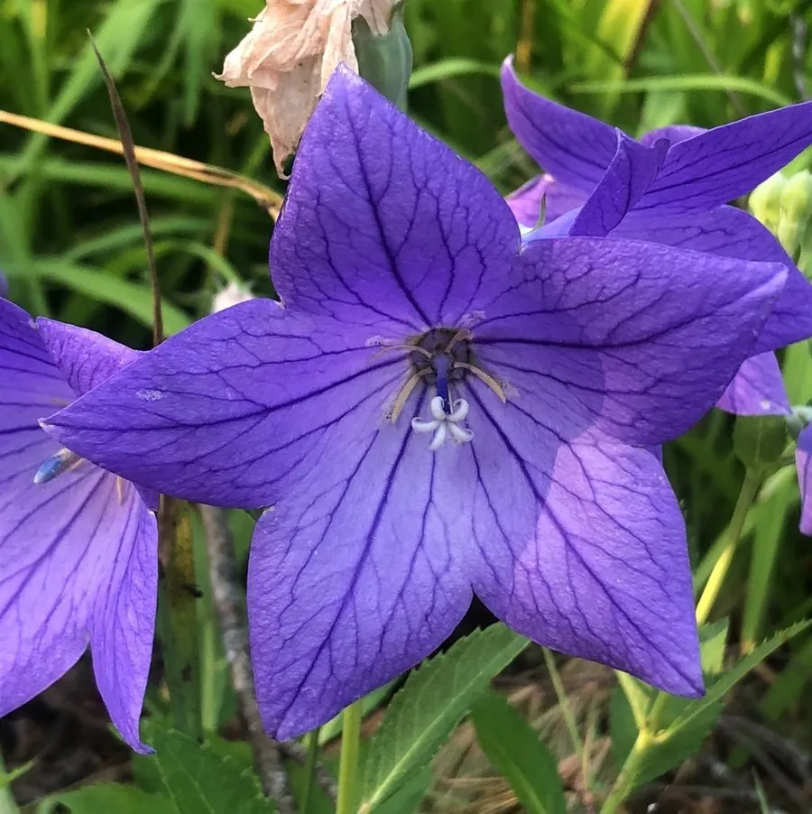

花卉与草本 · 植物界
桔梗 Platycodon grandiflorus

桔梗科多年生草本，蓝紫色花苞鼓如气球，根部可制泡菜、入药，是中国、日本、朝鲜常见的药食兼用植物。
- 分类
- 门被子植物门纲木兰纲目菊目科桔梗科属桔梗属
- 栖息环境
- 东亚的山坡草地与林缘，喜阳光充足、凉爽干燥
- 地理分布
- 原产东亚，中国、日本、朝鲜半岛广泛分布与栽培
- 保护级别
- 暂无评估
物种志
桔梗为桔梗科桔梗属多年生草本，株高 40–90 厘米，具肥厚肉质根，茎直立，少分枝。叶片卵形至披针形，边缘有锯齿，互生或轮生。花单生茎顶或数朵组成总状花序，花冠钟状，蓝色或蓝紫色，未开放时花苞膨大如气球，花期 6–8 月；果实为蒴果，成熟后开裂散种。
桔梗原产东亚，中国、日本、朝鲜半岛的山坡草地和林缘都能见到，喜阳光充足、凉爽干燥和排水良好的环境，耐寒不耐积水。它的根富含皂苷，是中药“桔梗”的来源，有宣肺祛痰之效；在朝鲜半岛，桔梗根经盐渍、拌辣酱后制成泡菜，是传统小菜。桔梗花形独特、花期长，也常作花境和盆栽观赏，英文名直译即“气球花”。
形态与习性
- 株高40–90 厘米，具肥厚肉质根
- 花期6–8 月，花苞膨大如气球
- 果期8–10 月，蒴果开裂散种
- 光照喜充足阳光
- 水分耐旱，忌积水
- 土壤疏松、排水良好的沙壤土
- 繁殖以播种和分株为主
- 主要用途花境观赏、根入药、朝鲜族泡菜原料
趣味知识
- 桔梗未开放的花苞鼓鼓的像气球，因此英文名意为“气球花”。
- 它的根是中药“桔梗”的来源，有宣肺祛痰的功效。
- 在朝鲜半岛，桔梗根常被制成拌辣酱的泡菜。
- 桔梗花冠钟形、蓝色或蓝紫色，花苞开放时会“啪”地弹开。